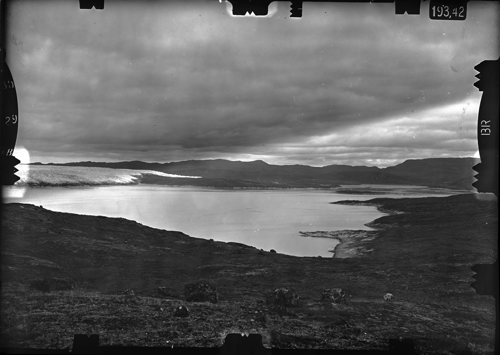
Polski Klub Polarny skupia badaczy, uczestników wypraw i miłośników Arktyki oraz Antarktydy — pielęgnując polską obecność na obu krańcach Ziemi.
Klub Polarny powstał w 1974 roku jako stowarzyszenie skupiające uczestników arktycznych i antarktycznych ekspedycji. Zawiązał się z inicjatywy profesora Alfreda Jahna — światowej sławy uczonego, wytrawnego znawcy i badacza Arktyki.
Od pół wieku łączymy naukowców, podróżników i pasjonatów, dając im przestrzeń do spotkań, dzielenia się wynikami badań oraz utrzymywania kontaktów z partnerami z całego świata.
„Klub Polarny skupił badaczy, uczestników wypraw i ludzi związanych różną formą współpracy w poznaniu świata polarnego — dał im możliwość prezentowania wyników badań w słowie mówionym i drukowanym, a przede wszystkim utrzymywania wzajemnych kontaktów." prof. Alfred Jahn, założyciel Klubu
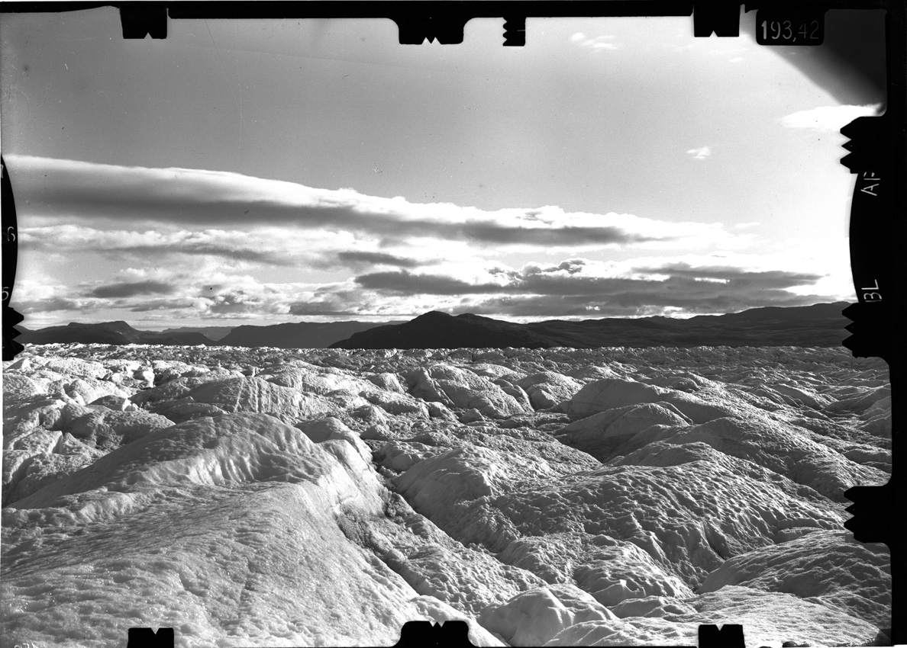
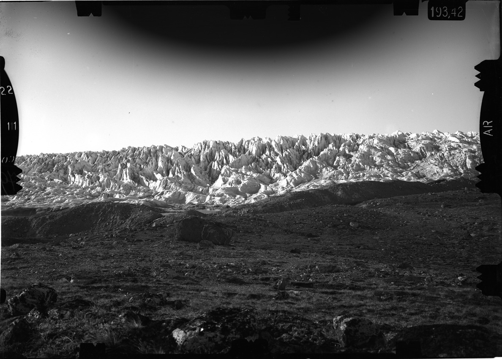
01Od Spitsbergenu po Antarktydę — relacje z ekspedycji i wyniki badań polarnych.
Czytaj więcej →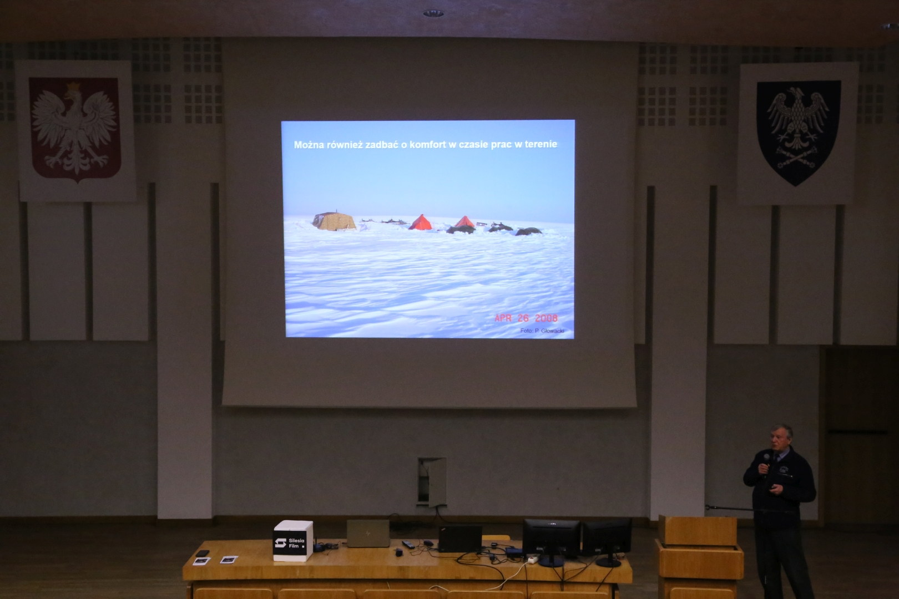
02Wykłady, przeglądy filmów polarnych, „Dzień Zimna" i spotkania otwarte dla każdego.
Czytaj więcej →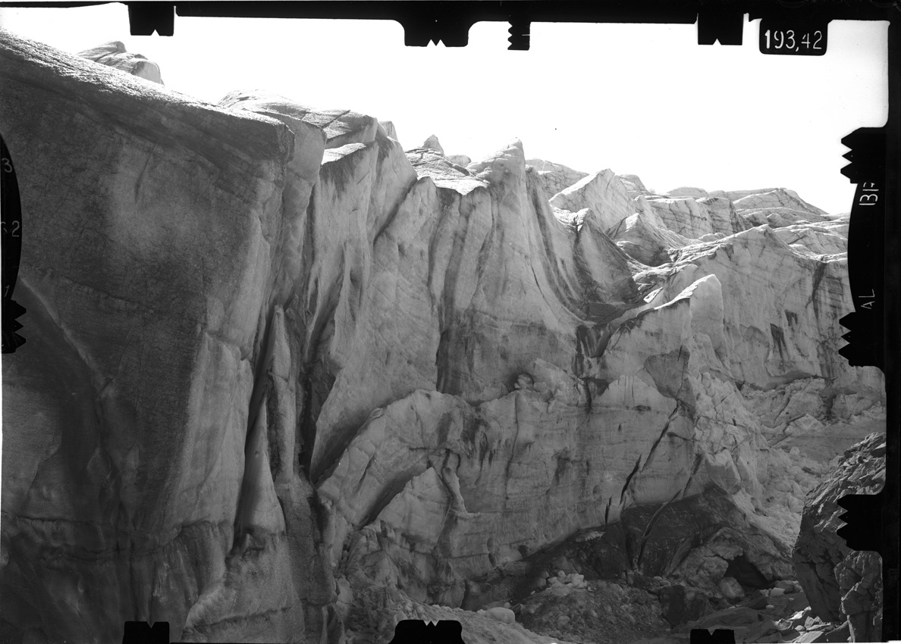
03Czasopismo dokumentujące polskie badania i działalność na obszarach polarnych.
Czytaj więcej →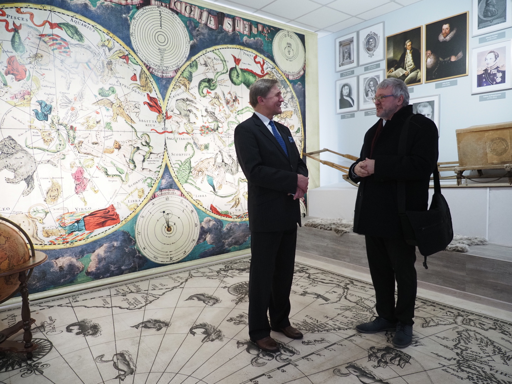
04Siedziba Klubu w Puławach — żywe centrum polarnej pamięci i spotkań środowiska.
Czytaj więcej →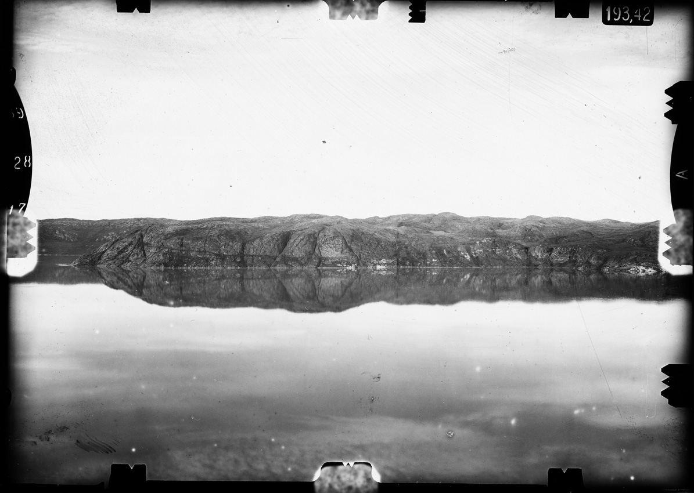
05Kartografia regionów polarnych — od historycznych szkiców po współczesne opracowania.
Czytaj więcej ↗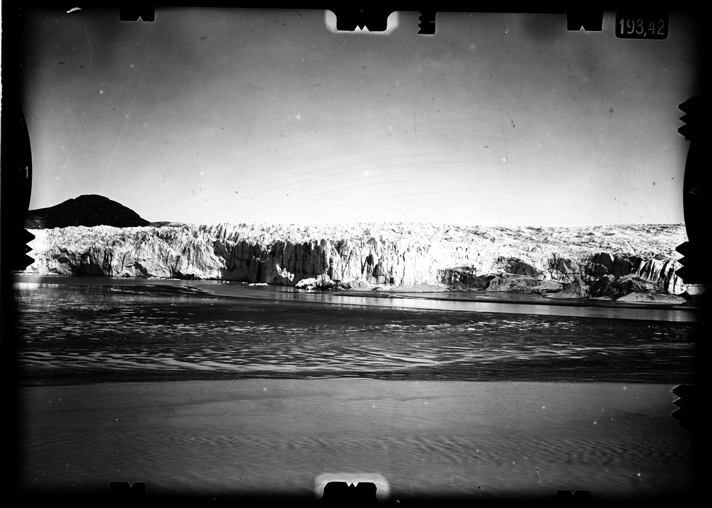
06Spójrz na świat polarny w czasie rzeczywistym — zbiór kamer ze stacji i regionów polarnych.
Czytaj więcej ↗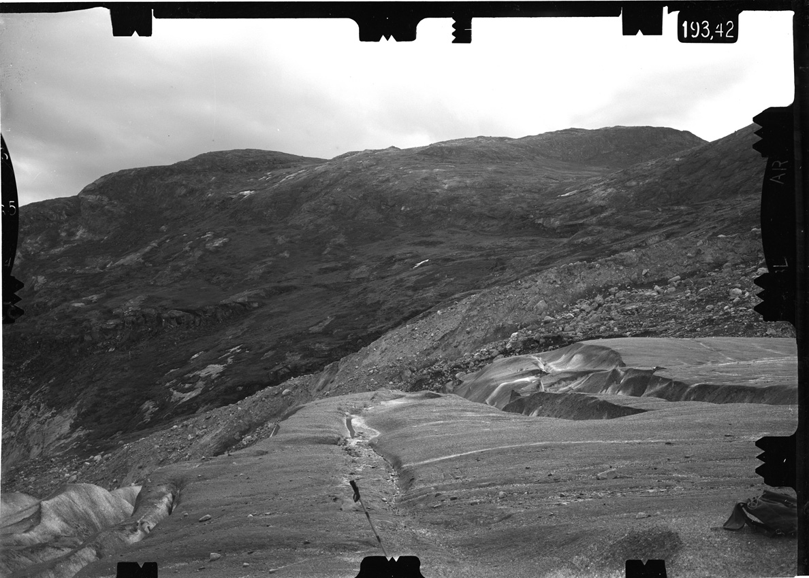
Lodowiec Polonia, góra Leopolis, Góry Mościckiego, Wawelu i Śmigłego-Rydza — to ślady polskich wypraw, które na mapie Grenlandii zostawiły nazwy z ojczystego krajobrazu i historii.
Zachowane szklane negatywy z tamtych ekspedycji to nie tylko dokument naukowy, ale i poruszający zapis pionierskiej obecności Polaków w świecie polarnym — dziedzictwo, które Klub pielęgnuje do dziś.
Zobacz archiwalne kadry →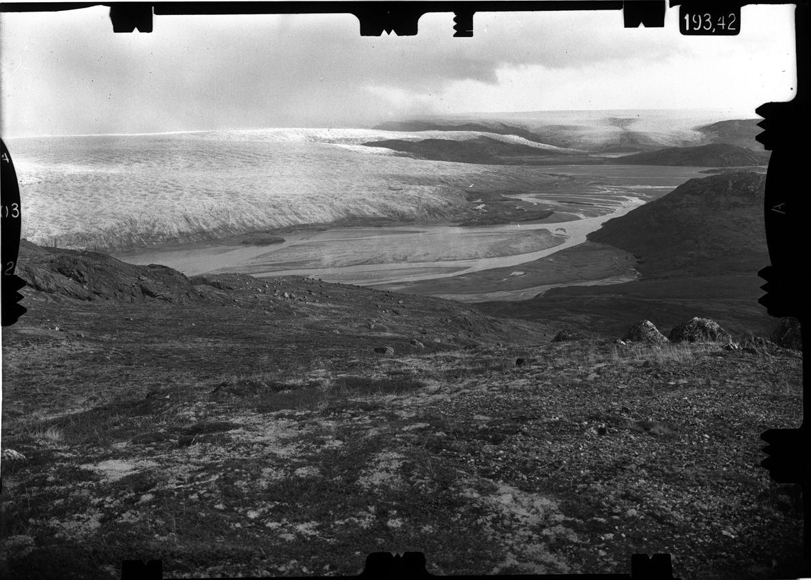
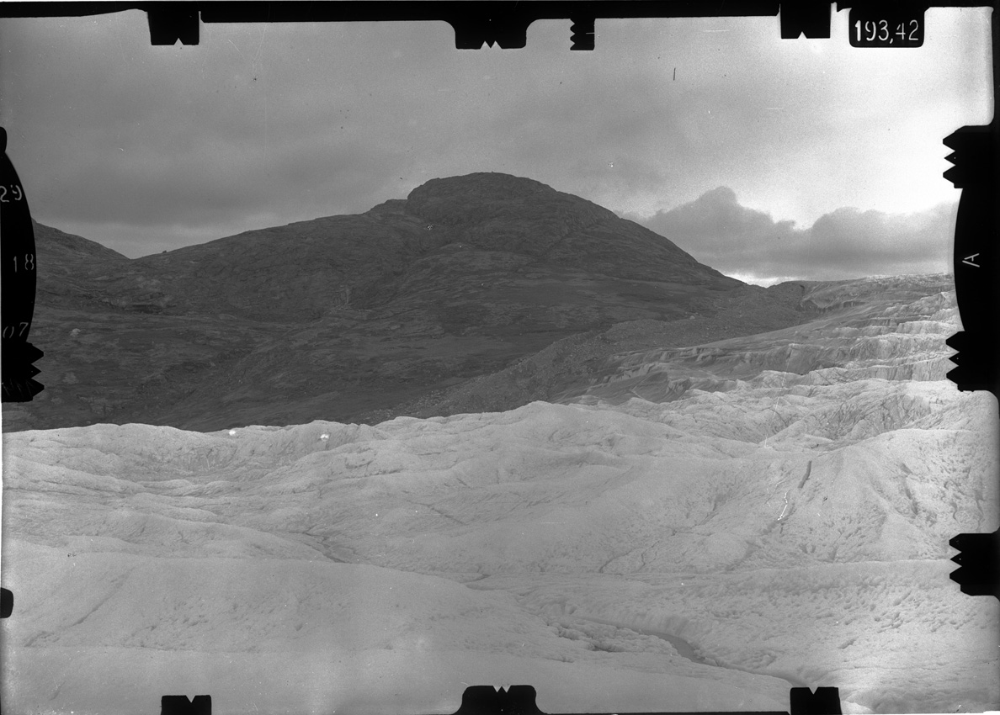
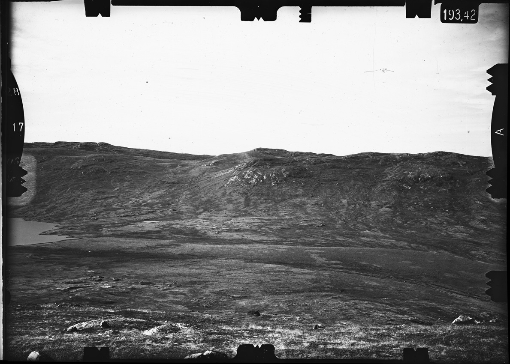
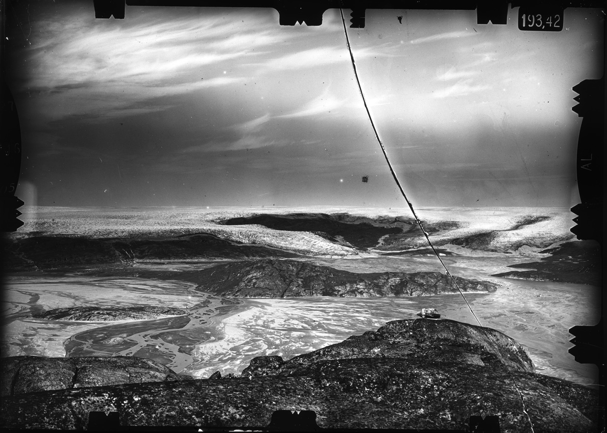
Łączysz pasję do świata polarnego z chęcią działania? Dołącz do wspólnoty badaczy, podróżników i miłośników Arktyki i Antarktydy. Wypełnij deklarację członkowską i wesprzyj polską obecność na biegunach.